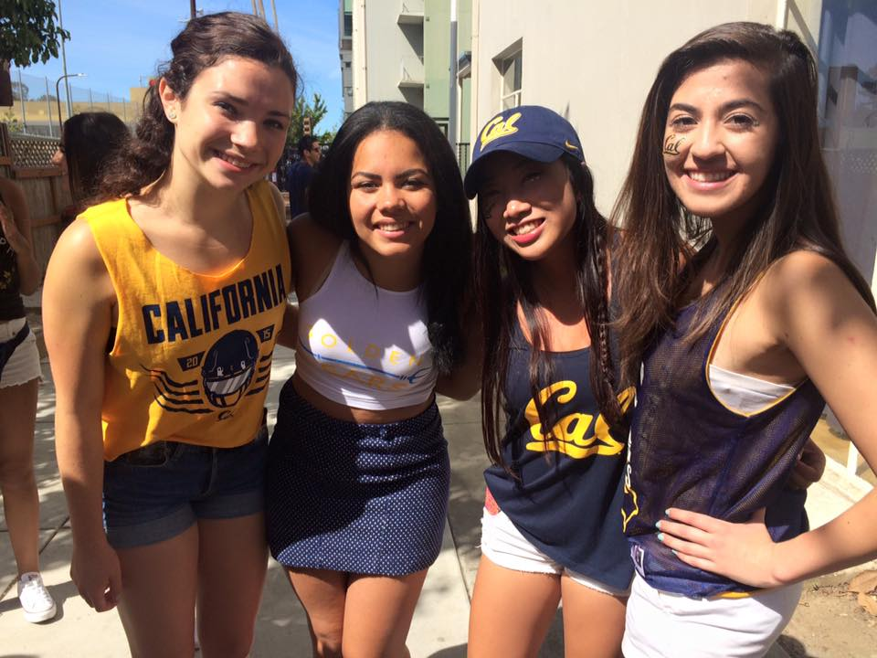
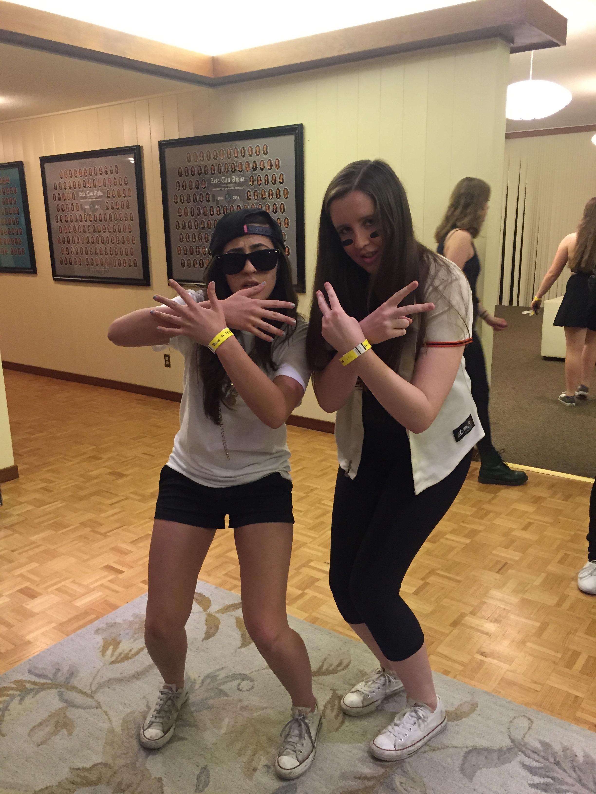
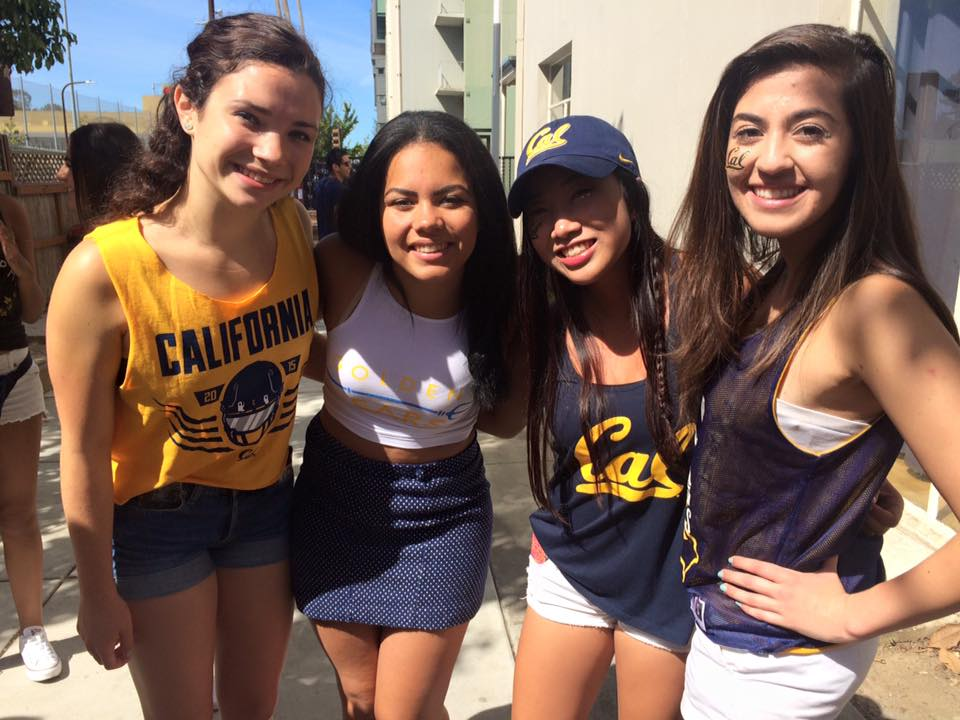
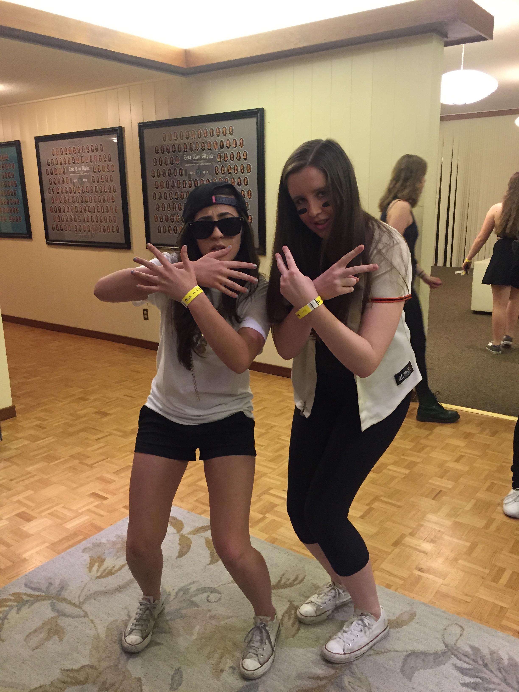

About Me


 



Who is Diana Akrami? Go ahead and click the buttons and scroll down to learn more about me!
Hometown: Walnut Creek, CA
I'm always so thankful to have grown up in the bay. The culture here is always so positive; Everyone can do anything and everyone is an innovator. My favorite part about the bay, though, is how the area is so diverse and open to cultures. Both my parents immigrated here from Afghanistan, and although I was scared coming into college as a first generation student, I was surprised at how many students identified that way and how excited everyone was to learn about new cultures.
College: University of California, Berkeley
When I got my acceptence letter, I knew this was the school for me. I didn't even think about the other schools that I was accepted to; I just knew Berkeley would be the perfect fit. And I was right. Berkeley encouraged me to step out of my comfort zone and try new things. In fact, I found my passion for Computer Science here.
Major: Computer Science
As a first year undergraduate, I was pretty much open to anything. One of my friends encouraged me to take a computer science class here so I went ahead and enrolled myself. The class was insanely difficult, especially to someone completely new at programming, but although the class was hard, I found myself being so proud of everything I created. Computer Science quickly grew into a passion and now I can't imagine any better career than a software engineer.
Sorority: Delta Delta Delta (Tri Delta)
Joining a sorority was one of the best decisions I've ever made. I've made such amazing friends and I'm thankful that I have such a great support system. I can always count on them for support, both academically and mentally. Unlike the stereotype sororities have, Tri Delta is full of STEM majors and smart women. If I ever get stuck on a CS project or CS homework, I can always go to another CS major in the house! Being able to go to someone for help like that makes me feel so much more comfortable in a bustling city like Berkeley. I couldn't imagine undergrad life without being a Tri Delta.
Weird Hobby: Rubik's Cubes
One of my weird hobbies is that I love rubik's cubes. Watching people get frustrated and lose patience over a small toy really caught my attention when I was younger. I just had to get one and try it out for myself. When I first learned to solve one, I couldn't put it down. I carried a rubik's cube around with me everywhere I went. I've memorized all the algorithms for the "layering" method, and now I'm trying to learn the "Fridrich" method so that I can finally solve one in under a minute. My best time as of late is under one minute and thirty seconds.
Favorite Childhood Memory: Disney
I'm absolutely in love with everything Disney. I've watched pretty much every classical Disney movie around 400 times and it never gets old. Disney has this whole uplifting and inspiring vibe that I can't get enough of. I actually did most of my grade school biographies on Walt Disney because I was so interested in how he created such an uplifting and influential connotation to everything Disney. Going to Disneyland with my family is always such a special experience. Everytime I go, I don't think I stop smiling the whole day. I'll never grow out of Disney.